무선설비기사 (2021-03-13 기출문제)
1과목: 디지털 전자회로
1. 다음 회로에서 RL 양단에 나타나는 정류출력전압은? (단, 입력에는 최대치 Vm인 사인파가 인가된다.)
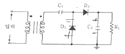
- -Vm
- Vm
- -2Vm
- 2Vm
(정답률: 79%)

2. 반도체 다이오드의 두 가지 바이어스(Bias) 조건으로 맞는 것은?
- 발진과 증폭
- 블록과 비블록
- 유도와 비유도
- 순방향과 역방향
(정답률: 88%)
3. 다음 그림과 같은 평활회로에서 출력 맥동률을 최소화하기 위한 방법으로 틀린 것은?
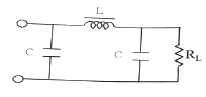
- 정류파형의 주파수를 높인다.
- L값을 크게 한다.
- C값을 크게 한다.
- RL값을 작게 한다.
(정답률: 85%)
4. 증폭기와 정궤환 회로를 이용한 발진회로에서 증폭기의 이득을 A, 궤환율을 β라고 할 때, βA＜1이면 출력되는 파형은?
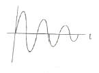
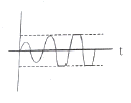
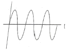
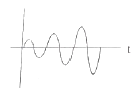
(정답률: 84%)
5. 다음 콜피츠 발진회로가 발진하는 조건은?
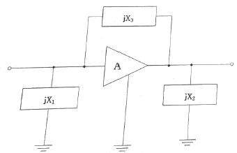
- jX1＜0, jX2＞0, jX3＞0
- jX1＜0, jX2＜0, jX3＜0
- jX1＞0, jX2＜0, jX3＞0
- jX1＜0, jX2＜0, jX3＞0
(정답률: 83%)
6. 병렬저항 이상형 RC발진회로에서 C=0.01[㎌]일 때 1500[Hz]의 발진주파수를 얻기 위한 R값은 약 얼마인가?
- 1.51[kΩ]
- 2.52[kΩ]
- 3.23[kΩ]
- 4.33[kΩ]
(정답률: 72%)
7. 다음 회로의 종류는?
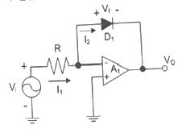
- 반파정류회로
- 전파정류회로
- 피크검출기
- 대수 증폭기회로
(정답률: 78%)
8. 다음 중 드레인 접지형FET 증폭기에 대한 특성으로 틀린 것은? (단, FET의 파라미터 Am은 상호 전도도이다.)
- 입력 임피던스는 매우 크다.
- 전압 이득은 약 1이다.
- 출력은 입력과 역위상이다.
- 출력 임피던스는 약 1/Am이다.
(정답률: 75%)
9. 계단(Step)입력에 대한 연산증폭기의 출력파형이 아래 그림과 같다. 슬루율(Slew Rate)은?
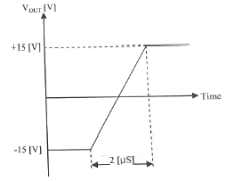
- 15[V/μS]
- 7.5[V/μS]
- 10[V/μS]
- 30[V/μS]
(정답률: 76%)
10. 다음 바이어스로 회로에서 전류 궤환 회로로 변경하려 한다. 어느 부분이 추가 또는 수정되어야 하나?
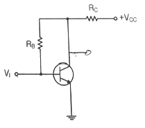
- RC
- RE
- RB
- RC, RE
(정답률: 71%)
11. AM 복조(검파) 회로에서 직선 검파회로의 RC(시정수)가 반송파의 주기보다 짧은 경우에 일어나는 현상은?
- 충방전 특성이 늦어진다.
- 출력은 입력 전압의 반송파 진폭의 제곱에 비례하게 되며, 검파 감도가 높아지게 된다.
- 방전이 빨리 일어나서 저항 R의 단자 전압변동이 크게 일어난다.
- 포락선의 변화에 추종하지 못한다.
(정답률: 62%)
12. 다음 중 단측파대 변조 방식의 특징으로 틀린 것은?
- 점유주파수대역폭이 매우 작다.
- 변복조기 사이에 반송파의 동기가 필요하다.
- 송신출력이 비교적 작게 된다.
- 전송 도중에 복조되는 경우가 있다.
(정답률: 75%)
13. 변조도 80%로 진폭 변조한 피변조파에서 반송파의 전력 Pc와 상측파대 또는 하측파대의 전력 Ps와의 비율은?
- 1:0.8
- 1:0.55
- 1:0.33
- 1:0.16
(정답률: 76%)
14. 정보 전송에서 800[Baud]의 변조 속도로 4상 차분 위상 변조된 데이터 신호 속도는 얼마인가?
- 600[bps]
- 1200[bps]
- 1600[bps]
- 3200[bps]
(정답률: 79%)
15. 다음 회로와 등가인 회로는 어느 것인가?
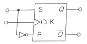
- RS 플립플롭
- JK 플립플롭
- D 플립플롭
- T 플립플롭
(정답률: 75%)
16. 멀티플렉서의 설명이 아닌 것은?
- 특정한 입력을 몇 개의 코드화된 신호의 조합으로 바꾼다.
- N개의 입력 데이터에서 1개의 입력만 선택하여 단일 통로로 송신하는 장치이다.
- 멀티플렉서는 전환 스위치의 기능을 갖는다.
- 데이터 선택기라고도 한다.
(정답률: 70%)
17. 다음 중 Flip-Flop 회로를 쓰지 않는 것은?
- 리미터 회로
- 분주 회로
- 기억 회로
- 2진 계수 회로
(정답률: 80%)
18. 다음 회로에서 기전력 E를 가하고 S/W를 ON하였을 때 저항 양단의 전압 VR은 t초 후 어떻게 표시되는가?
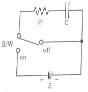
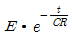
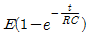
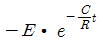
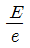
(정답률: 69%)
19. 다음 그림은 T F/F을 이용한 비동기 10진 상향계수기이다. 계수값이 10 이 되었을 때 계수기를 0으로 하기 위해서는 전체 F/F을 clear 시켜야 하는데 이렇게 하기 위해 (가)에 알맞은 게이트는?
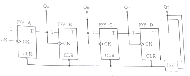
- OR
- AND
- NOR
- NAND
(정답률: 79%)
20. 다음 중 BCD 코드란?
- byte
- bit
- 2진화 10진 코드
- 10진화 2진 코드
(정답률: 80%)
2과목: 무선통신 기기
21. 다음 중 높은 주파수에서도 발진이 가장 안정적인 것은?
- 수정 발진기
- 콜피츠 발진기
- 하틀리 발진기
- 동조형 발진기
(정답률: 79%)
22. AM(Ampltude Modulation)에서 반송파 전압이 10[V], 변조도가 80[%]일 때 상측파대 전압은 몇 [V]인가?
- 2[V]
- 4[V]
- 6[V]
- 8[V]
(정답률: 72%)
23. 페이딩(Fading)에 의한 수신전계강도 변화에 대해 수신기 출력을 일정하게 하기 위한 회로는?
- 자동주파수제어회로(AFC)
- 자동이득조정회로(AGC)
- 자동잡음제어회로(ANL)
- 자동전력제어회로(APC)
(정답률: 80%)
24. L 입력형 필터 정류기를 사용하다가 이보다 높은 출력전압을 얻기 위해 π형 정류기로 변환하였다. 이때 리플 함유율을 개선하기 위한 방법이 아닌 것은?
- L 값을 크게 한다.
- 입력측 C값을 크게 한다.
- RL값을 크게 한다.
- 출력측 C값을 작게 한다.
(정답률: 70%)
25. 다중접속 기술 방식 중 OFDMA 방식의 단점으로 가장 적합한 것은?
- 운용 유연성이 부족하다.
- 복잡한 수신기가 필요하다.
- 다중경로 페이딩에 의한 보호구간이 필요하다.
- 전송된 신호의 평균전력과 최대전력과의 비율을 나타내는 PAR 값이 높다.
(정답률: 70%)
26. CPFSK에 대한 설명으로 부적절한 것은?
- 위상이 연속적인 FSK 변조방식이다.
- 1과 0에 각기 다른 주파수를 할당하여 두 개의 신호를 발생시키고, 스위치를 통해 데이터에 따라 신호를 선택하는 방법이다.
- VCO를 사용하여 신호의 주파수를 변경하는 방식으로 신호를 생성할 수 있다.
- CPFSK 신호는 일반 FSK 신호와 비교하여 부대엽(Sidelobe)이 적어지는 장점이 있다.
(정답률: 71%)
27. 다음의 변조방식 중 복조시에 반송파의 위상정보를 정확히 알아야만 하는 변조방식은?
- BPSK
- FSK
- DPSK
- OOK 혹은 ASK
(정답률: 72%)
28. 다음 중 무선통신 시스템의 수신신호 전력에 대한 설명으로 틀린 것은?
- 송신전력의 크기에 비례한다.
- 안테나 유효 개구면(Aperture)에 비례한다.
- 자유공간에서 송신부까지의 거리 제곱에 반비례한다.
- 신호 파장에 비례한다.
(정답률: 64%)
29. QAM(Quadrature Amplitude Modulation) 복조기에서 In-Phase 기준신호가 I 성분을 뽑아내는데 사용되는 것은?
- 동조회로
- 위상검출기
- 저역통과필터
- 전압제어 발진기
(정답률: 80%)
30. 무선항행 운용 장비로 사용되는 레이더의 구조 중 스캐너에 대한 설명으로 가장 적합한 것은?
- 펄스 전파를 송신하고 물표의 반사 신호를 수신하는 장비이다.
- 일정한 반복 주기를 가진 직류펄스(Trigger Pulse)를 발생시키는 장치이다.
- 트리거(Trigger) 신호에 의하여 짧고 강력한 펄스 형태의 전파를 발생시키는 장치이다.
- 수신기로부터 온 영상 신호를 브라운관 또는 LCD 창에 영상으로 나타내어 물표의 거리와 방위를 측정하는 장치이다.
(정답률: 63%)
31. 다음 중 GPS에 대한 설명으로 틀린 것은?
- 여러 개의 위성으로부터 시간 정보를 받는다.
- GPS 수신기는 위성의 거리에 대한 데이터를 받는다.
- 삼각 측량법에 의해 자신의 위치를 계산하는 원리이다.
- GPS 서비스는 다수의 위성 중 4개 이상의 위성으로부터 정보를 받는다.
(정답률: 73%)
32. 다음 중 계기 착륙방식인 ILS(Instrument Landing System)의 구성 요소가 아닌 것은?
- Localizer(방위각 제공 시설)
- Glide Path(활공각 제공 시설)
- MLS(초고주파 착륙 시설)
- Marker Beacon(마커 비콘)
(정답률: 77%)
33. 무선 항행 장비 중 자동식별 장치(AIS: Automatic Identification System)의 정보에 적합하지 않은 것은?
- 정적 정보
- 동적 정보
- 입선 정보
- 항행 관련 정보
(정답률: 72%)
34. 브리지형 정류회로에서 직류 출력전압이 10[V]이고, 부하가 10[Ω]이라고 하면 각 정류소자에 흐르는 첨두 전류값은?
- π/2 [A]
- π [A]
- 2π [A]
- 4π [A]
(정답률: 74%)
35. 다음 중 납 축전지의 성분을 맞게 짝 지은 것은?
- (납 + 이산화납)을 묽은 황산과 결합 시킨 것을 납 축전지라 한다.
- (납 + 묽은 황산)을 이산화납에 결합 시킨 것을 납 축전지라 한다.
- 이산화납을 묽은 황산에 결합 시킨 것을 납 축전지라 한다.
- (납 + 이산화납)을 증류수에 결합 시킨 것을 납 축전지라 한다.
(정답률: 73%)
36. 무선 수신기에 수신되는 신호 중 원하는 신호를 골라내는 능력에 해당하는 것은?
- 선택도
- 이득
- 잡음
- 감도
(정답률: 86%)
37. 다음 중 AM(Amplitude Modulation) 송신기의 신호대 잡음비 측정에 필요하지 않는 것은?
- 저주파 발진기
- 감쇠기
- 전력계
- 직선 검파기
(정답률: 75%)
38. 오실로스코프의 수직축에는 피변조파, 수평축에는 이상기를 거친 변조신호를 인가하면 사다리꼴의 출력 파형이 나타난다. A가 B의 3배일 때 변조도는 몇[%]인가?
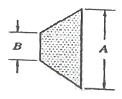
- 50[%]
- 60[%]
- 80[%]
- 100[%]
(정답률: 68%)
39. 다음 중 계수형 주파수계에 대한 설명으로 잘못된 것은?
- ±1 Count 오차는 계수시간과 피측정 신호의 상대 위상 관계 때문에 발생한다.
- ±1 Count 오차를 작게 하기 위해 게이트 시간을 짧게 한다.
- 매초당 반복되는 파의 수를 펄스로 변환하여 계수한 후 표시하는 방식이다.
- 측정범위를 확대하기 위해서는 비트다운(Beat Down)방식을 사용한다.
(정답률: 75%)
40. 무선통신망의 전파품질 특성시험에서 물리적 특성시험으로 가장 적합한 것은?
- TSE(Tramitter Spurious Emissions)
- OBUE(Operation Band Unwanted Emissions)
- ACLR(Adjacent Channel Leakage Power Ratio)
- VSWR/DTF 안테나, 급전선 정재파비 측정
(정답률: 80%)
3과목: 안테나 공학
41. 주간에 20[MHz]의 신호로 원양에서 조업 중인 선박과 통신을 하고자 할 때 이용되는 전리층은?
- D층
- Es층
- E층
- F층
(정답률: 69%)
42. 다음 중 무선 전송에서 페이딩의 영향을 최소화 하기 위한 기법으로 적합하지 않은 것은?
- 상관기
- 편파 다이버시티
- 시간 다이버시티
- 주파수 다이버시티
(정답률: 79%)
43. 다음 중 전자파 잡음 방해의 개선방법으로 적합하지 않은 것은?
- 인공잡음을 경감 시킨다.
- 내부잡음 전력을 감소시킨다.
- 수신기의 대역폭을 넓힌다.
- 지향성 안테나의 사용 등에 의한 수신 신호전력을 크게 한다.
(정답률: 79%)
44. 다음 중 델린저 현상에 대한 특징으로 맞는 것은?
- 소실현상이라고 한다.
- 저위도보다 고위도 지방이 심하다.
- 지속 시간은 2일에 5일간 계속된다.
- 15일 주기로 발생하고 전자밀도가 증가한다.
(정답률: 68%)
45. 다음 중 전파예보 곡선으로부터 알 수 없는 정보는?
- MUF(Maximum Usable Frequency)
- 주파수의 사용 가능 시간
- 사용 가능 주파수
- 임계 주파수
(정답률: 76%)
46. 다음 중 제1종 전리층 감쇠에 대한 설명으로 틀린 것은?
- 감쇠량은 주파수에 비례한다.
- 야간 보다는 주간에 감쇠가 크다.
- E층 반사파는 주간에 D층에서 감쇠를 겪는다.
- 전리층에서 반사된 파가 지상으로 돌아오면서 전리층을 통과할 때 생기는 손실이다.
(정답률: 53%)
47. 송수신점 사이의 거리가 37.62[km]이고 사용주파수가 6[GHz]일 때 두 점 사이에서의 자유공간 손실은 약 얼마인가?
- 125.5[dB]
- 139.5[dB]
- 200.7[dB]
- 225.7[dB]
(정답률: 62%)
48.
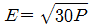
는 어떤 안테나의 전계강도를 구하는 공식인가?- 등방성 안테나
- 반파장 다이폴 안테나
- λ/4 비접지 안테나
- λ/4 수직접지 안테나
(정답률: 70%)
49. 다음 중 무선 시스템 링크에서 수신 안테나의 수신전력을 나타내는 Friis의 전달공식에 대한 설명으로 틀린 것은?
- 수신전력을 송신전력, 안테나 이득, 거리, 주파수로 표현한 것으로 모든 무선 시스템 설계를 위한 기본식이다.
- 송신기와 수신기 간의 거리가 멀어질수록 수신전력은 거리의 제곱근으로 비례하여 감소한다.
- 실제 무선 시스템에서 수신전력을 감소시키는 여러 가지 요소가 있는 것을 고려할 때 최대 수신전력이라 볼 수 있다.
- 수신전력을 감소시키는 요소는 송수신 안테나 임피던스 부정합, 송수신 안테나 간의 편파 부정합 등이 있다.
(정답률: 65%)
50. 전압정재파비(VSWR)와 반사계수에 대한 설명으로 옳은 것은?
- 임피던스 정합의 정도를 알 수 있다.
- 동조급전방식에서 동조점을 찾는데 꼭 필요하다.
- 반사계수는 에 가까울수록 양호한 것이다.
- 전압정재파비가 1에 가까울수록 반사손실이 크다.
(정답률: 76%)
51. 다음 중 안테나의 급전선에 스터브(Stub)를 부착하는 이유는?
- 안테나의 서셉턴스 성분을 제거하여 대역폭을 증가시키기 위하여
- 복사전력을 증폭시키기 위하여
- 안테나의 지향성을 높이기 위하여
- 안테나 리액턴스 성분을 제거하여 임피던스를 정합시키기 위하여
(정답률: 81%)
52. 특성임피던스가 각각 200[Ω]과 800[Ω]인 선로를 λ/4 임피던스 변환기를 이용하여 정합하고자 할 경우 삽입선로의 특성임피던스 값은?
- 600[Ω]
- 500[Ω]
- 400[Ω]
- 300[Ω]
(정답률: 82%)
53. 다음 중 도파관의 종류가 아닌 것은?
- 구형 도파관
- 원형 도파관
- 타원형 도파관
- 루프형 도파관
(정답률: 77%)
54. 다음 도파관의 정합방법 중 비가역성 회로를 사용하여 정합시키는 방법은?
- 아이솔레이터
- 도파관의 창
- 테이퍼 변성기
- 무반사종단기
(정답률: 71%)
55. 전자파 흡수율(SAR)의 적합성 평가시험 수치와 실생활 동화시 수치의 차이점에 대한 설명으로 틀린 것은?
- 적합성평가를 위한 SAR시험 시에는 휴대폰 출력이 최소인 상태에 측정하나, 실제 통화 시에는 기지국과의 통신에 필요한 최대한의 출력만 사용하도록 설계되어 있다.
- 실생활에서 휴대폰 통화 시에는 전화기를 잡는 방법과 기지국과의 거리 및 특성에 따라 SAR값이 달라질 수 있다.
- 일상적인 통화시의 SAR값은 휴대폰 적합성평가 시험시의 SAR값에 비해 매우 적다.
- 한국은 국제권고기준(2W/kg)보다 엄격한 1.6W/kg으로 정하고 있다.
(정답률: 71%)
56. 장해전자파 한계치에 대한 설명으로 틀린 것은?
- 장해전자파의 한계치를 결정하기 위해서는 장해전자파의 파형과 주파수 스펙트럼, 전파특성 및 장해를 받는 통신 및 방송시스템의 내성을 고려해야 한다.
- 가정용 전기, 전자기기와 자동차 등에서 발생하는 장해전자파는 주파수 스펙트럼이 광대역이며 파형도 불규칙한 펄스 형태의 장해전자파가 많다.
- 전자기기에서 발생되는 장해전자파의 형태를 구별하여 펄스 형태는 정현파 형태보다 엄격한 한계치를 적용해야 한다.
- 전기, 전자, 정보처리 장치 등의 장해전자파 한계치는 통신 및 방송시스템에 장해를 주지 않도록 정해져 있다.
(정답률: 65%)
57. 전자파장해 수신기는 전송선로의 부하에 나타나는 전압을 측정하게 되는데, 우리가 필요로 하는 측정량은 피측정기기로부터 방출되는 전기장의 세기이다. 아래 측정 환경조건에서 전기장의 세기(E)는 얼마인가? (조건: 안테나에 연결된 전송선로를 거쳐서 전자파장해 수신기에 나타난 전압(VL)=20[dBμV], 안테나인자(K)=5[dB/m])
- 15[dBμV/m]
- 20[dBμV/m]
- 25[dBμV/m]
- 30[dBμV/m]
(정답률: 73%)
58. 다음 중 전자파장해(EMI)에 대한 설명으로 가장 적합한 것은?
- 전자파 양립성이라고도 한다.
- 전자파내성(EMS) 분야와 전자파적합(EMC) 분야로 구분할 수 있다.
- 전기·전자기기가 외부로부터 전자파 간섭을 받을 때 영향 받는 정도를 나타낸다.
- 발생 원인으로는 자연적인 발생 원인(대기잡음, 우주잡음, 대양방사 등)과 인공적인 발생원인(의도적인 잡음, 비의도적인 잡음)으로 크게 구분한다.
(정답률: 65%)
59. 다음 중 단파용 안테나의 특징으로 적합하지 않은 것은?
- 수직편파를 이용한다.
- 설치비가 비교적 저렴하다.
- 고유파장의 안테나를 얻기 쉽다.
- 안테나의 이득을 높게 할 수 있다.
(정답률: 58%)
60. 다음 중 가상접지에 대한 설명으로 틀린 것은?
- 대지의 도전율이 나쁜 곳에서 사용된다.
- 지상고 2.5[m] 이상에 도체망을 설치하는 방식이다.
- 도체망과 대지사이에 변위전위가 흐르게 하여 접지한다.
- 도체망의 가설 면적을 작게 해야 좋은 효과를 얻을 수 있다.
(정답률: 78%)
4과목: 무선통신 시스템
61. 다음 중 FM 수신기에서 수신신호가 없거나 약한 경우 발생하는 잡음을 자동으로 억제하는 기능은?
- 진폭제한기능
- 주파수변별기능
- 디엠퍼시스기능
- 스켈치회로
(정답률: 76%)
62. 입력 신호대 잡음비가 10[dB]이고 시스템의 잡음지수가 1.65일 경우의 출력 신호 대 잡음비는 약 얼마인가?
- 7.8[dB]
- 8.8[dB]
- 9.5[dB]
- 10[dB]
(정답률: 63%)
63. 이동통신시스템의 다원접속방식 중 주파수 스펙트럼을 여러 개의 구간으로 구분하여 다수의 사용자가 또 다른 사용자와 겹치지 않도록 각기 주어진 주파수의 대역을 사용하는 방식은 무엇인가?
- CDMA
- CSMNA
- FDMA
- TDMA
(정답률: 77%)
64. 다음 중 GPS의 측위 오차가 아닌 것은?
- 구조적인 요인에 의한 거리 오차(Range Error)
- 위성의 배치상황에 따른 기하학적 오차
- C/A 코드(Coarse Acquisition) 오차
- 선택적 이용성에 의한 오차(SA: Selective Availability)
(정답률: 74%)
65. 다음 중 이동통신시스템에서 전파음영지역을 해소하기 위한 방법이 아닌 것은?
- 안테나 수를 줄인다.
- 반사기를 사용한다.
- 우산형 복사패턴을 갖는 Discone 안테나를 사용한다.
- 누설 급전선을 사용한다.
(정답률: 75%)
66. 통합공공망 주파수 700[MHz] 대역을 공동으로 사용하는 공공망(재난안전통신망, 초고속해상무선통신망 및 철도통합무선망 등)간 무선망 중첩 지역에서의 간섭 해소를 위한 기지국 공유 기술은?
- RAN Sharing
- GCSE(Group Call System Enabler)
- MCPTT(Mission Critical Push To Talk)
- IOPS(Isolated EUTRAN Operation Public Safety)
(정답률: 70%)
67. 공공안전통신망의 국가 재난안전통신망과 상호연계를 위한 철도통신망은 다음 중 어느 것인가?
- LTE-PS
- LTE-M
- LTE-T
- LTE-R
(정답률: 67%)
68. 지상파 UHD(Ultra High Definition) TV(4K)는 지상파 HD(High Definition) TV(Full HD)보다 몇 배의 해상도인가?
- 2배
- 4배
- 8배
- 16배
(정답률: 82%)
69. WPAN(Wireless Personal Area Network)을 위한 전송 기술이 아닌 것은?
- Zigbee
- Bluetooth
- UWB
- PLC
(정답률: 73%)
70. 다음 중 NFC에 대한 설명으로 틀린 것은?
- 사용 주파수는 13.56[MHz]이다.
- 보안성이 우수하여 결재와 인증에 사용된다.
- 사용 거리가 10[cm] 이내인 근거리무선통신 기술이다.
- Bluetooth, Wi-Fi, RFID 등과 호환이 안된다.
(정답률: 79%)
71. 다음 중 Wi-Fi 세대별 해당하는 기술 규칙이 틀린 것은?
- Wi-Fi 3: 802.11g
- Wi-Fi 4: 802.11n
- Wi-Fi 5: 802.11a
- Wi-Fi 6: 802.11ax
(정답률: 68%)
72. 무선랜의 장점이 아닌 것은?
- 효율성
- 확장성
- 이동성
- 보안성
(정답률: 84%)
73. 다음 중 IEEE802.11 무선랜에서 사용하는 보안기술이 아닌 것은?
- WEP
- WPA1
- WPA2
- IPSec
(정답률: 72%)
74. 다음 중 SGW(Signaling Gateway) 기능에 대해 맞게 설명한 것은?
- IMS와 PSTN 간의 호 제어 시그널링에 의해서 생성되는 호의 실질적인 베어러의 연결을 위해서 MGW를 제어한다.
- 주요한 기능으로는 멀티미디어 메시지 재생, 음성메일 서비스, 미디어 변환/믹싱 서비스, Transcoding 서비스를 한다. 또한 기존의 MSC가 가지고 있던 Tone 생성 및 안내방송 기능도 담당한다.
- 망내에 HSS가 두 개 이상 운영되고 각각 별도의 주소로 인식될 때 CSCF에게 적절한 HSS의 주소를 제공한다.
- 시그널링 프로토콜의 전송계층을 변환하는 기능을 수행한다. 즉, ISUP나 MAP과 같은 프로토콜 자체는 변환하지 않고 IP망과 PSTN, IP망과 기존망(2G 및 2.5G)의 전송계층을 변환하는 기능을 한다.
(정답률: 65%)
75. 통신 프로토콜은 ISO/OSI 7 계층 중 전달 계층(Transport Layer)을 중심으로 상위계층과 하위계층 프로토콜로 구분한다. 다음 중 하위계층의 프로토콜이 아닌 것은?
- 무 순서 프로토콜
- 문자 방식 프로토콜
- 문자 계수식 프로토콜
- XNS (Xerox Network System) 프로토콜
(정답률: 76%)
76. 다음 중 안테나 시설 설계 시 작성하여야 할 도면에 해당되지 않는 것은?
- 부지 평면도
- 운용실 배치도
- 철탑 시설도
- 접지도 및 피뢰침도
(정답률: 68%)
77. 다음 중 무선통신 전송시스템이 설치될 건물(국사)의 부대설비로 적합하지 않은 것은?
- 비상발전기
- 항온항습기
- NMS(Network Management System)
- UPS(Uninterruptible Power Supply)
(정답률: 66%)
78. 계측기와 중 측정 항목의 연결로 틀린 것은?
- Power Meter – 송신출력 측정
- 스펙트럼분석기 – Channel Power
- 절연저항계 – DC 루프저항
- 네트워크 분석기 – 안테나 VSWR
(정답률: 59%)
79. 절연저항의 측정에 대한 설명으로 가장 거리가 먼 것은?
- 직류 전압을 인가한 1분 후의 전류 값에 의해, 전기적 절연저항 측정
- 주로 광케이블 선로에서 사용
- 측정계측기는 절연저항계 또는 메거(Megger)를 사용
- 측정 단위는 통상[MΩ] 단위를 사용
(정답률: 69%)
80. 다음 중 이동통신 모바일 DM(Diagnastic Monitor)장비 기반으로 시행하는 품질 시험 항목이 아닌 것은?
- Cell Throughut 시험
- 호 접속 성공률
- Handover 시험
- 교환시스템에 대한 모니터링
(정답률: 67%)
5과목: 전자계산기 일반 및 무선설비기준
81. 메모리 인터리빙(Memory Interleaving)의 사용 목적은?
- 메모리의 저장 공간을 높이기 위해서
- CPU의 Idle Time을 없애기 위해서
- 메모리의 Access 횟수를 줄이기 위해서
- 명령들의 Memory Access 충돌을 막기 위해서
(정답률: 74%)
82. 다음 내용이 의미하는 소프트웨어는 무엇인가?
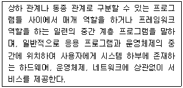
- 유틸리티
- 디바이스 드라이버
- 응용소프트웨어
- 미들웨어
(정답률: 81%)
83. 다음 중 네트워크 계층에서 전달되는 데이터 전송 단위로 옳은 것은?
- 비트(Bit)
- 프레임(Frame)
- 패킷(Packet)
- 데이터그램(Datagram)
(정답률: 70%)
84. 다음 중 OSI 참조모델의 네트워크 계층과 같은 역할을 하는 TCP/IP의 계층은?
- 인터넷 계층
- 전송 계층
- 응용 계층
- 표현 계층
(정답률: 67%)
85. 송신측에서 만들지 않은 메시지를 수신측으로 전송하는 문제가 발생하는 네트워크 보안 위협 요소는?
- 전송 차단
- 가로채기
- 변조
- 위조
(정답률: 77%)
86. C 클래스의 네트워크 주소가 ‘192.168.1.0’이고, 서브넷 마스크가 ‘255.255.255.248’일 때, 최대 사용 가능한 호스트 수는? (단, 네트워크 주소와 브로드캐스트 호스트는 제외한다.)
- 6개
- 10개
- 14개
- 30개
(정답률: 64%)
87. 2진수 (100110.100101)를 8진수로 맞게 변환한 값은?
- 26.91
- 26.45
- 46.91
- 46.45
(정답률: 78%)
88. 10진수 45를 2진수로 맞게 변환한 값은?
- 100110
- 100101
- 101101
- 011001
(정답률: 78%)
89. 클라우드 컴퓨팅 기술에 대한 설명으로 틀린 것은?
- 아마존은 20⑤년에 자사의 웹 서비스를 통해 유틸리티 컴퓨팅을 기반으로 하는 클라우드컴퓨팅 서비스를 시작
- 20⑤년부터 2007년까지 클라우드컴퓨팅은 SaaS 서비스로 대세를 이루다가 2008년부터는 IaaS, PaaS 등의 서비스 기법으로 영역을 넓혀나감
- 1960년대 미국의 컴퓨터 학자인 존 맥카시(John McCarthy)가 “컴퓨팅 환경은 공공시설을 사용하는 것과 동일한 것”이라고 한 데에서 시작
- 클라우드로 옮겨간 형태의 네트워크라는 뜻으로 모든 사물에 칩을 넣어 언제 어디서나 사물에 대한 인식 및 제어를 할 수 있도록 구현한 컴퓨팅 환경
(정답률: 68%)
90. 클라우드 컴퓨팅의 서비스 유형과 적용 서비스가 맞지 않게 연결된 것은?
- IaaS : AWS(AmazonWeb Service)
- SaaS : 전자메일서비스, CRM, ERP
- PaaS : Google AppEngine, Microsoft Asure
- BPaaS : 컴퓨팅 리소스, 서버, 데이터센터 패브릭, 스토리지
(정답률: 66%)
91. 무선국 정기검사 시 대조검사 사항이 아닌 것은?
- 시설자
- 설치장소
- 무선종사자의 배치
- 점유주파수대폭
(정답률: 57%)
92. 과학기술정보통부장관 허가를 받아야 하는 전력선통신설비의 주파수 대역과 고주파출력이 맞게 짝지어진 것은?
- 9[kHz]이상 30[MHz]까지, 10와트 이하
- 3[kHz]이상 60[MHz]까지, 50와트 이상
- 9[kHz]이상 30[MHz]까지, 10와트 이상
- 3[MHz]이상 60[MHz]까지, 50와트 이하
(정답률: 57%)
93. 산업용 전파응용설비는 고주파출력이 몇 와트를 초과하는 경우 과학 기술정보통신부장관의 허가를 받아야 하는가?
- 10[W] 초과
- 20[W] 초과
- 30[W] 초과
- 50[W] 초과
(정답률: 67%)
94. 다음 사항 중 위탁운용 또는 공동사용할 수 있는 무선설비에 해당되지 않는 것은?
- 송신설비 및 수신설비
- 방송통신위원회가 정하는 실험국의 무선설비
- 무선국의 안테나설치대
- 시설자가 동일한 무선국의 무선설비
(정답률: 67%)
95. 무선국의 분류에 의한 방송국의 종류에 해당되지 않는 것은?
- 지상파방송국
- 위성방송국
- 지상파방송보조국
- 이동방송국
(정답률: 62%)
96. 충파방송을 행하는 방송국의 개설조건 중 블랭킷에어리어 내의 가구수는 그 방송국의 방송구역 내 가구 수의 몇 퍼센트 이하여야 하는가?
- 0.15
- 0.25
- 0.35
- 0.5
(정답률: 70%)
97. 다음 괄호 안에 들어갈 내용으로 가장 적합한 것은?
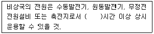
- 6
- 12
- 24
- 48
(정답률: 71%)
98. 아마추어국의 송신설비의 전력은 무엇으로 표시하는가?
- 첨두전력
- 평균전력
- 규격전력
- 반송파전력
(정답률: 66%)
99. 전파응용설비의 고주파출력측정 및 산출방법은 누가 정하여 고시하는 바에 의하는가?
- 과학기술정보통신부장관
- 한국전자통신연구원장
- 중앙전파관리소장
- 한국방송통신전파진흥원장
(정답률: 76%)
100. 무선설비의 안전시설기준에서 정하는 발전기, 정류기 등에 인입되는 고압전기는 절연차폐체 내에 수용하여야 한다. 다음 중 고압전기에 포함되는 것은?
- 220 볼트를 초과하는 교류전압
- 220 볼트를 초과하는 직류전압
- 500 볼트를 초과하는 교류전압
- 750 볼트를 초과하는 직류전압
(정답률: 79%)